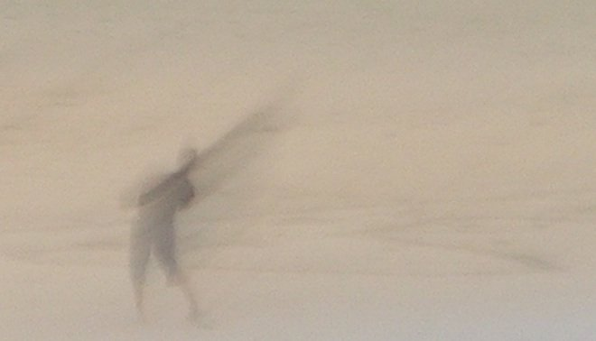

LOS NOMBRES DE LAS COSAS
.
Es fácil entenderlo. El vaso es no es más que un vaso,
el papel sólo un papel, los lienzos blancos que envuelven mi soledad
son sábanas, el cielo opaco y claro se llama techo,
y los límites de este cuarto son paredes, con huecos como ventanas
o puertas, todo de acuerdo con las reglas.
.
Si digo que escribo, es que trazo con pluma o con un lápiz,
cada uno con su tacto,
garabatos con sentido en un papel, que no son ni cisnes,
ni elefantes, ni dibujos de cosas, sino minúsculas huellas
que otros pueden deletrear,
siempre de acuerdo con las reglas.
.
Si nombro pájaro, o lumbre, o pronuncio con orden sonidos,
siempre de acuerdo con la norma,
cualquiera imagina sin esfuerzo los objetos.
Incluso si digo vuelo, ladrido, número o cosas más complejas
(pongo por caso: palanca, hidrocefalia o dios)
cualquiera evoca con certeza una pluma en el aire,
la sombra de un perro
o la cantidad finita de granos de arena en un reloj.
.
Si, de acuerdo con los códigos,
pronuncio o escribo las palabras contenidas
en el libro de los nombres de las cosas,
resulta sencillo adivinar la huella que producen los objetos,
conectar nombres con verbos,
adjetivos, preposiciones y pronombres,
y construir, siempre de acuerdo con la regla,
una frase, un discurso, un contrato o un poema.
.
Todo va bien hasta que encabezo una carta
dirigida a ti, que estás tan lejos.
Entonces, no sirven para nada los preceptos
y el orden de las cosas se subvierte.
Se desbaratan los nombres, aparecen desiertas
las páginas de todos los libros que consulto.
Las plumas se me embotan, los lápices
se me convierten en pompas de jabón
y el papel se me transforma en un mar de porcelana
en que naufragan hasta las huellas de mis dedos.
.
Los nombres de las cosas se me mudan en adverbios
si pienso en ti
y escribo sin embargo cuando me gustaría decirte
algo que tiene que ver con la curva de tu entonces.
(¿Lo ves?)
.
Me olvido de tu carta. Me levanto de la mesa
e imagino una partida de ajedrez, –es un ejemplo– y vuelven hasta mí
los nombres de las torres, los escaques y los reyes.
Los caballos se me encelan incluso en el tablero
y puedo hacer reverencias a la reina, o charlar con un peón.
.
Si me distraigo de ti,
todo vuelve a la norma, y un vaso no es más que un vaso
de nuevo, y podría comenzar este poema otra vez–lo he intentado ya–
hasta que me encuentre de nuevo con tu rostro
y vuelvan el mar de porcelana, las plumas embotadas,
las pompas de jabón, y el círculo vicioso de vasos, sábanas y techos.
.
No hay reglas escritas, ni valen convenciones
si te apoderas de mi memoria.
Nunca sabrás el precio tan alto que pago si estás lejos.